6.桌面管理¶
云晫云课堂系统的桌面管理功能，实现课程和虚拟桌面的管理。其中包括了 课程桌面、固定桌面、自由上机桌面。不同的角色用户拥有的操作权限不同。
6.1.课程桌面¶
课程桌面只有在课程启动时才会显示。在 <课程桌面> 的界面中，用户可查看其权限允许下当前已创建的虚拟桌面列表。
列表显示着虚拟桌面 “桌面名称” 、“使用者”、“桌面配置” 、“镜像” 、桌面的 “IP地址” 、“桌面状态” 以及 “回收时间” 等信息。同时在操作栏提供了虚拟桌面的绑定、重启、续租、还原、删除等功能。
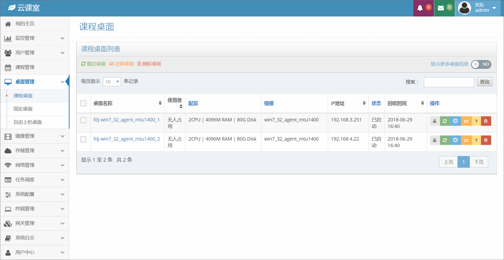图6-1-1 课程桌面
在 <课程桌面> 的管理界面中，用户可以打开 “显示更多桌面信息” 复选框，打开后桌面列表新增的字段为：“所属计算节点名称” 和 “所属计算节点IP”，用户可以查看课程桌面所属的计算节点名称和IP。再次点击复选框，将隐藏上述两个字段。
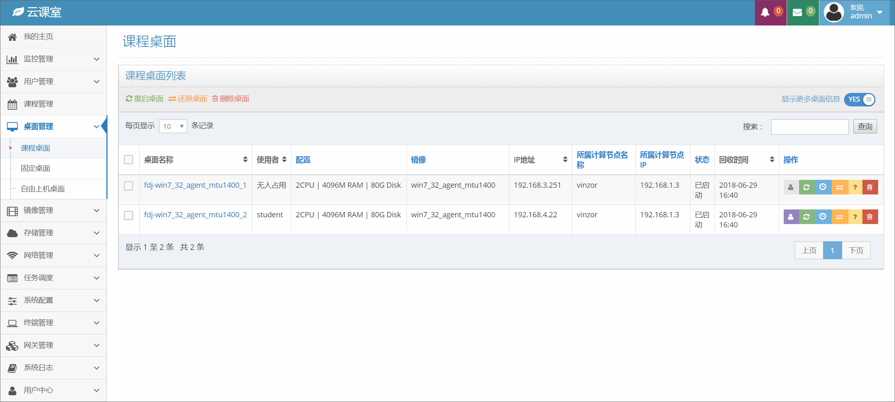图6-1-2 课程桌面显示更多信息
{kind=link}
{kind=link}
6.1.1.绑定用户¶
<课程桌面> 的管理界面中，可以对一台桌面进行 “绑定” 操作，操作栏中的 【绑定】 按钮呈现灰色说明这台桌面没有绑定用户，点击某一桌面操作栏中的 【绑定用户】 按钮，系统自动弹出 <绑定用户> 弹窗，点击搜索框搜索需要绑定的用户名称，点击弹窗【确定】按钮即可为该桌面绑定用户。
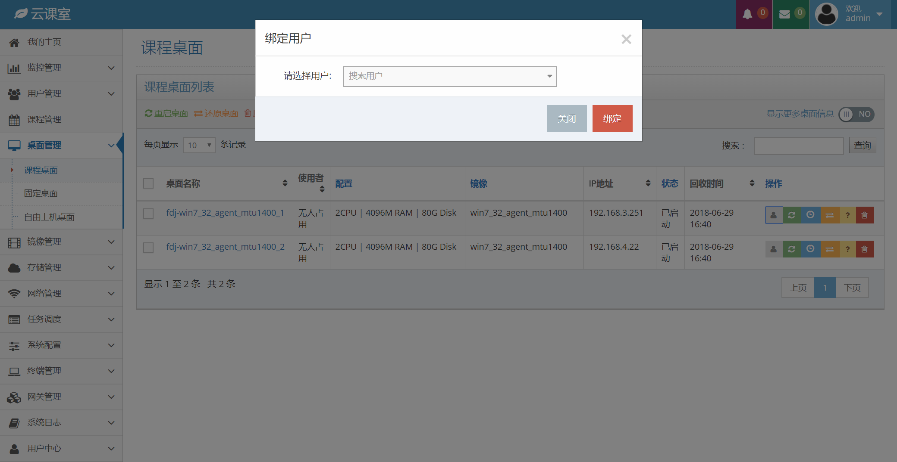图6-1-3 绑定用户
{kind=link}
6.1.2.解绑用户¶
{kind=link}
{kind=link}
6.1.3.删除桌面¶
在 <桌面管理> 的界面中，点击该桌面列表对应的 【删除】 按钮，系统自动弹出 <删除桌面> 确认窗口，点击弹窗 【确定】 按钮即可删除该桌面。
弹窗中的复选框如果不勾选，在删除失败的情况下可能只是删除了记录，但是没有删除虚拟机，这样会导致资源泄露。如果勾选了复选框，可以强制删除虚拟机。
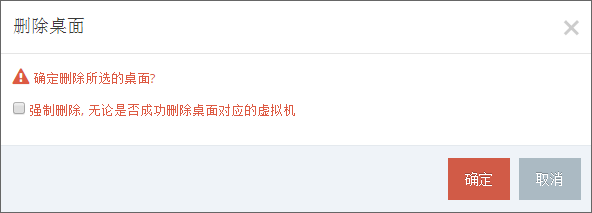图6-1-6 删除桌面确认弹窗
{kind=link}
6.1.4.重启桌面¶
在 <课程桌面> 的界面中，点击该桌面列表对应的 【重启】 按钮，系统会弹出 <重启桌面> 确认框。点击弹窗的 【确定】 按钮，即可重启该桌面。虚拟机状态变更到 “已启动” 状态，则表示操作成功。
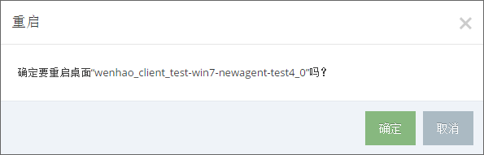图6-1-7 虚拟桌面重启确认弹窗
{kind=link}
6.1.5.还原桌面¶
桌面在使用过程中，系统环境会产生许多个人数据，并且随着使用时长的增加，会造成系统的卡顿。所以，云晫云课堂提供了 “还原桌面” 的功能。
在 <课程桌面> 的界面中，点击该桌面列表对应的 【还原桌面】 按钮，系统会弹出 <还原桌面> 确认框。点击弹窗的 【确定】 按钮，即可还原该桌面。
注意：“还原桌面”会将旧有桌面的个人信息全部删除，请谨慎使用该功能。
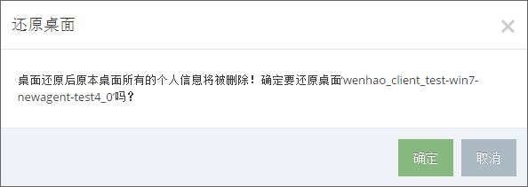图6-1-8 虚拟桌面还原确认弹窗
{kind=link}
6.1.6.批量重启桌面¶
{kind=link}
6.1.7.批量还原桌面¶
在 <课程管理> 的界面中，点击选择需要还原的课程桌面（点击勾选对应课程前的方格），再点击课程桌面列表左上方的 【还原】 按钮，出现 <还原桌面> 弹窗，点击弹窗中的 【确定】 按钮，即可实现批量还原课程桌面操作。
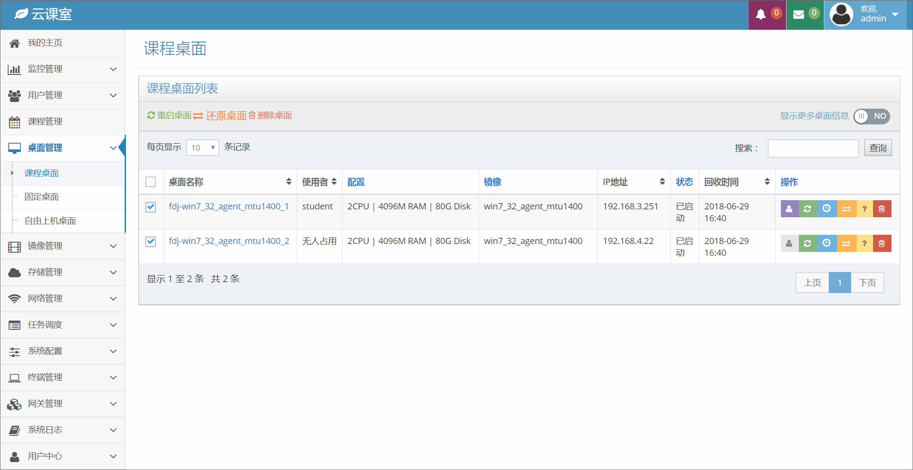图6-1-10 批量还原桌面
注意：“还原桌面”会将旧有桌面的个人信息全部删除，请谨慎使用该功能。
{kind=link}
6.1.8.批量删除桌面¶
在 <课程管理> 的界面中，点击选择需要还原的课程桌面（点击勾选对应课程前的方格），再点击课程桌面列表左上方的 【删除】 按钮，出现 <删除桌面> 弹窗，点击弹窗中的 【确定】 按钮，即可实现批量删除课程桌面操作。

图6-1-11 批量删除桌面
6.2.固定桌面¶
固定桌面属于用户固定使用的桌面，随时随地登录并保存个人资料与操作环境。在 <固定桌面> 的界面中，用户可查看其权限允许下当前已创建的固定桌面列表。
列表显示着固定桌面的 “桌面名称” 、“使用者” 、“桌面配置” 、“镜像” 、桌面的 “IP地址” 、桌面 “外设策略” 、桌面 “客户端连接协议” 以及 “桌面状态” 等信息。同时在操作栏提供了固定桌面的绑定、重启、关闭、还原、删除等功能。
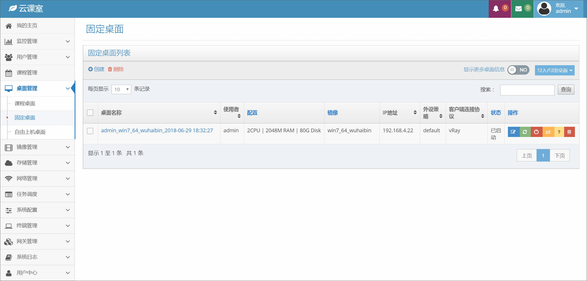图6-2-1 固定桌面
{kind=link}
6.2.1.创建固定桌面¶
在 <固定桌面> 的管理界面中，点击固定桌面列表中的 【创建】 按钮，系统会弹出 <创建桌面> 的弹窗，选择 “使用者” 、“镜像” 、“桌面配置”、“虚拟网络”、“外设策略” 和 “客户端连接协议” 的信息，点击弹框中的 【确定】 按钮，完成创建桌面的操作。
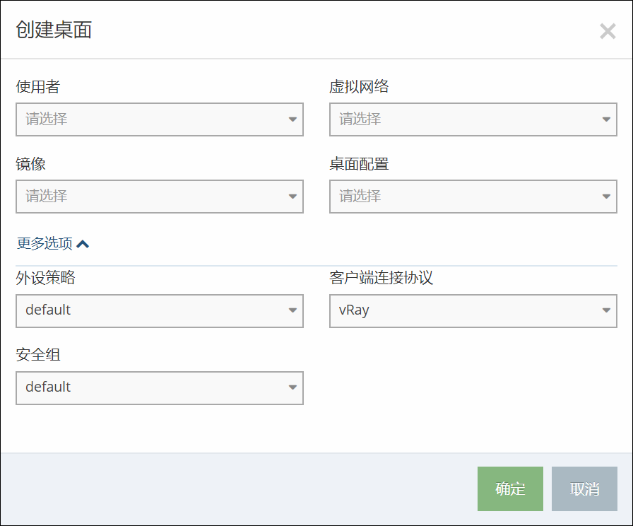图6-2-2 创建固定桌面
{kind=link}
6.2.2.编辑固定桌面¶
在 <固定桌面> 的管理界面中，点击固定桌面列表操作中的 【编辑桌面】 按钮，系统会弹出 <编辑桌面> 的弹窗，选择要修改的信息，点击弹框中的 【确定】 按钮，完成编辑桌面的操作。
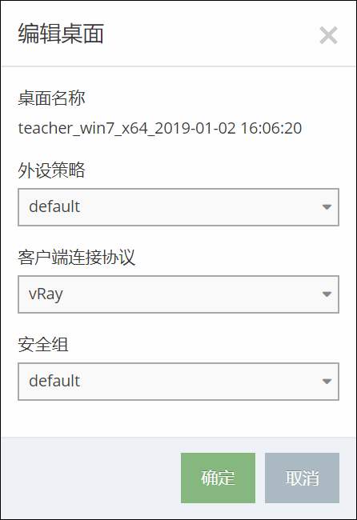图6-2-3 编辑固定桌面
{kind=link}
6.2.3.调整固定桌面大小¶
在<固定桌面>的管理界面中，点击固定桌面列表操作中的【调整桌面大小】按钮，系统会弹出<调整桌面大小>的弹窗，选择新的桌面配置大小，点击弹框中的【确定】按钮，完成调整桌面大小的操作。
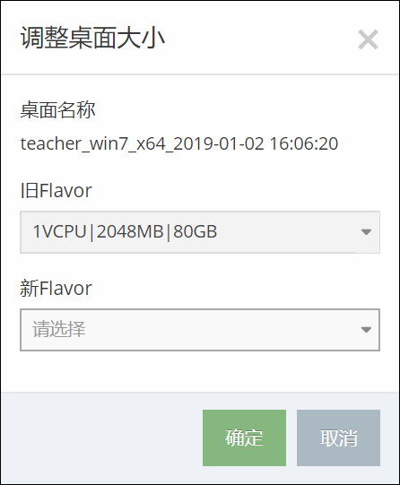图6-2-4 调整固定桌面大小
{kind=link}
6.2.4.重启、还原、删除固定桌面¶
固定桌面的重启、还原、删除的操作原理与课程桌面页面相同，可参考6.1节中说明。
6.2.5.关闭固定桌面¶
{kind=link}
{kind=link}
6.3.自由上机桌面¶
自由上机桌面是为了让管理员可以灵活调度空闲的桌面资源。
在 <自由上机桌面> 界面中，管理员可通过设置自由上机的起始时间、开启自由上机的最大桌面数量、访问的用户、虚拟内网、外设策略以及选择镜像方案。在镜像方案列表中，管理员可以添加、删除和编辑镜像方案，管理员可以通过更改镜像方案来灵活设定自由上机计划。
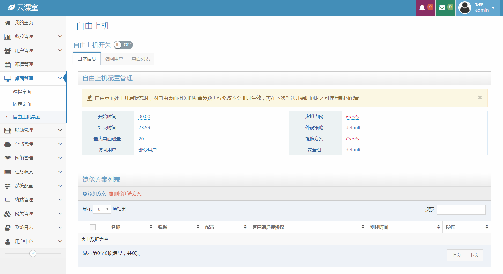图6-3-1 自由上机桌面
{kind=link}
6.3.1.开启/关闭自由上机桌面¶
在 <自由上机桌面> 的界面中，管理员可以通过点击自由上机开关的按钮来开启和关闭自由上机计划。
注：自由上机桌面处于开启状态时，对自由桌面相关的配置参数进行修改不会即时生效，需在下次到达开始时间时才可使用新的配置。
6.3.2.添加镜像方案¶
在 <自由上机桌面> 的界面中，点击镜像方案列表中的 【添加方案】 按钮，系统会弹出 <创建镜像方案> 弹窗，点击输入镜像方案的名称，选择镜像、桌面配置和客户端连接协议。点击弹窗的 【确定】 按钮，即可完成镜像方案的创建操作。
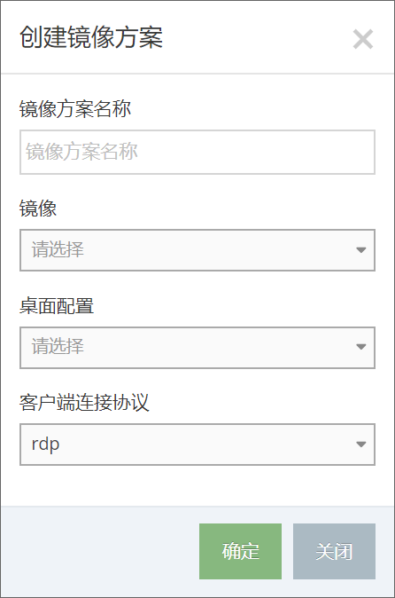图6-3-2 创建镜像方案
{kind=link}
6.3.3.删除镜像方案¶
在 <自由上机桌面> 的界面中，点击镜像方案列表操作中的 【删除】 按钮，系统会弹出 <删除> 弹窗，点击弹窗中的 【删除】 按钮，即可完成镜像方案的删除操作。
注：镜像方案使用中无法被删除。
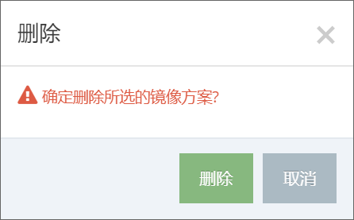图6-3-3 删除镜像方案
{kind=link}
6.3.4.编辑镜像方案¶
在 <自由上机桌面> 的界面中，点击镜像方案列表操作中的 【编辑】 按钮，系统会弹出 <编辑镜像方案> 弹窗，输入需要修改信息，点击弹窗中的 【确定】 按钮，即可完成镜像方案的编辑操作。注：镜像和桌面配置无法修改。
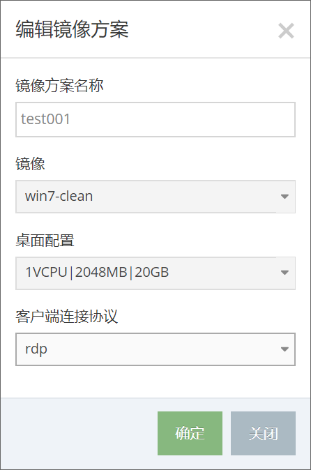图6-3-4 编辑镜像方案
{kind=link}
{kind=link}
{kind=link}
{kind=link}
{kind=link}